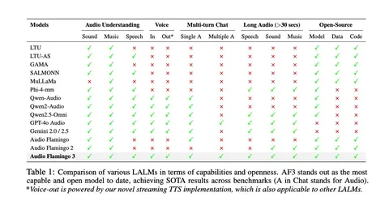

Сегодня разбираем статью о модели Audio Flamingo 3, в которой авторы предлагают новый энкодер AF-Whisper. Одно из его ключевых отличий — умение обрабатывать все три типа аудио: речь, звуки и музыку. По словам авторов, большинство аудио-LLM используют три отдельных энкодера для этих задач.
Основной вклад работы, который отмечают в статье: новый аудиоэнкодер, использование chain-of-thought, поддержка multi-turn-диалогов, понимание длинных записей и voice-to-voice-диалоги. Кроме этого, модель полностью в открытом доступе, включая код обучения и использованные датасеты.
Что касается бенчмарков, авторы сравнились как с опенсорсными, так и с проприетарными решениями — модель везде показала лучшие результаты. Наиболее близкой они считают GPT-4 Audio, но при этом отмечают её закрытость.
Архитектура
AF-Whisper построен на базе Whisper, который дообучили вместе с LLM. Есть недостаток — модель не стриминговая: работает с 30-секундными фрагментами звука, обрабатывая соседние куски без маскировки, а затем собирает аудио произвольной длины. Whisper разморозили, добавили адаптер с кросс-аттеншеном (как в Audio Flamingo 2) и сгенерировали синтетические описания готовых аудио с помощью GPT-4.1.
Этапы обучения
Сначала обучают только адаптер, чтобы не повредить энкодер и LLM. Затем идёт совместное обучение энкодера и адаптера, после чего следуют дополнительные стадии: 1) SFT — разморожена вся сеть; 2) расширение контекста и reasoning — разморожена только LLM; 3) для добавления диалогов снова разморожена вся сеть.
Данные
Основная часть статьи посвящена описанию данных. Первая и вторая стадии используют пост-опенсорсные датасеты, конвертированные в единый формат: например, в задачах ASR модель явно просили выполнить транскрибацию. Далее идёт стадия Audio Skills XL с добавлением пар «вопрос-ответ».
Авторы отмечают, что одного ASR и классификации аудио по открытым датасетам недостаточно для появления reasoning, поэтому они генерируют дополнительные данные:
— берут 30-секундные аудиофрагменты;
— создают датасет из 4,5 млн новых вопросов-ответов, в основном multi-choice;
— источники — YouTube8M, Music4All, Million Song Dataset;
— на основе метаданных и аудио GPT-4.1 генерирует промпты и ответы.
Для описания звуковых событий применяют аналогичный подход, используя также Audio Flamingo 2, который умеет давать базовые описания.
Reasoning
Отдельный датасет сделали для длинных аудио с задачами на рассуждение. Разметку reasoning добавляли в небольшое число сэмплов и прямо на уровне промпта просили модель объяснить ход рассуждений. Ответы — до 40 слов. Префиксы для reasoning генерировали в Gemini, так как он давал меньше галлюцинаций.
Примеры решаемых задач: определение сарказма и эмоционального состояния, извлечение информации из длинного аудио, определение порядка событий, суммаризация,
отслеживание смены темы разговора.
Multi-turn-диалоги
Последним этапом авторы добавили данные для естественных многошаговых диалогов — 75 тысяч примеров, сгенерированных GPT.
Инфраструктура
Обучение проводили на кластере из 128 A100. Авторы отмечают, что ключ к качественной модели — чистый датасет. В экспериментах вариант с reasoning давал заметный прирост качества.
Всеволод Ковшов
